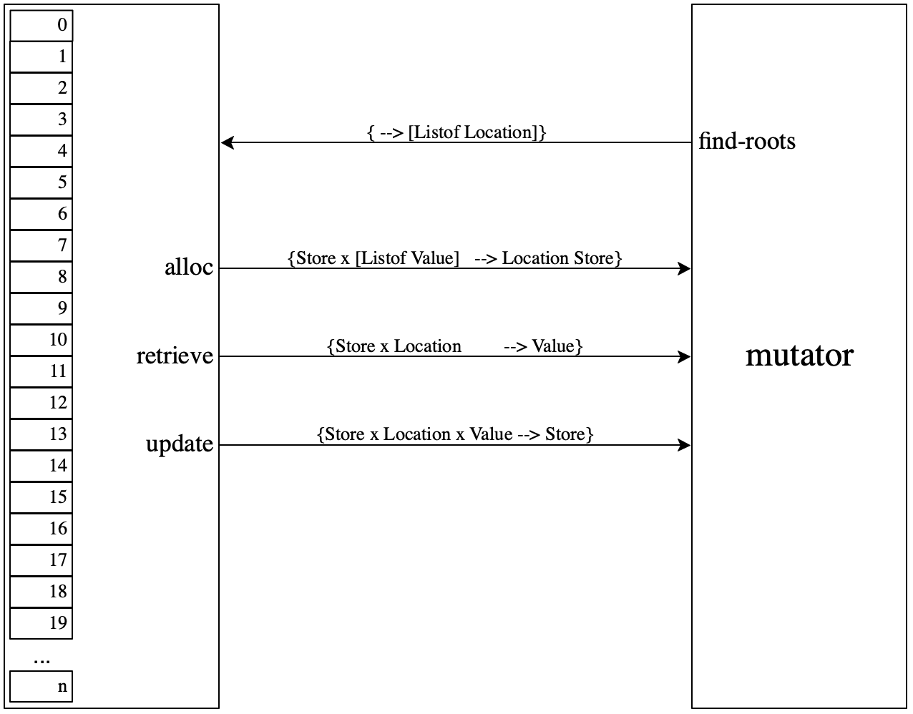
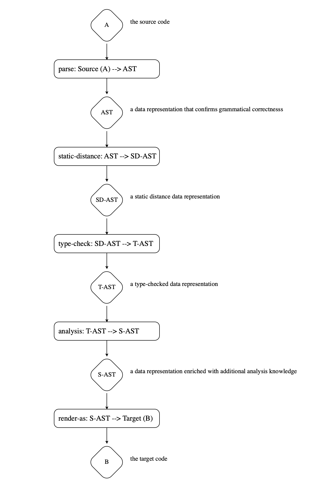

27 —
Tuesday, 14 April 2020
Message in a Bottle
A software developer is like the guy who walks on the beach, finds a a bottle, barely deciphers the messages inside, adds a few words, and throws it back in the ocean.
The Web Developers vs Church and Turing
Every developer knows that different programming languages play different roles. Java runs the back-end of the stack. JavaScript is for the front-end. Python makes machine learning people happy. Data scientists vote for R. Ruby (on Rails) had its day in the sun.
When pressed though, ninety-nine percent of computer scientists and those trained in computer science will tell you that all programming languages are equal. All “Turing complete”In principle, there is no such thing as “Turing complete” though we have all used these term for a long time. There is NP-complete, which is a well-defined term, and PL borrowed this phrase. programming languages have the same “power,” meaning you can write only a certain class of programs in them.
How can we reconcile these two takes on programming languages?
Let’s start by stating the Church-Turing hypothesis.
The Church-Turing Hypothesis vs the Web Stack
Goedel visited Church in Princeton after publishing his famous theorem that logic can’t prove all truths about arithmetic and beyond, not even in the small and seemingly simple area of formal statements. For his proof, Goedel had constructed what we would now call a programming language; imagine BSL without structures. Goedel stayed on at the IAS.
Church responded with an investigation of the nature of pure functions and thus
invented the λ calculus—
Turing obtained his PhD at Princeton under Church’s direction in the mid
1930s and got to know Church’s students and the λ calculus. He had come
there after having demonstrated the undecidability of the
Entschedidungsproblem but having been pre-empted by Church’s
publication of the same result. Lobbying by his advisors allowed him to
publish this result eventually with an appendix that proved the equivalence
of his eponymous machines. And this gave rise to the famous hypothesis:
These days Turing gets a lot more credit than Church or
Goedel because his life fits much better into the Hollywood scheme of
modern politics but all three people had to figure it out jointly—
A programming language can—
at most— compute the partial recursive functions on the natural numbers.
If a programming languages does compute all partial recursive functions, people nowadays speak of “Turing complete” programming languages, because Turing’s machines were most clearly distinct from an ordinary notion of mathematical function and yet equivalent to this set of functions.
Ideas like these, and even the extended variant of the thesis, became the central point of theory of computation. The field is still related to theory of programming languages and complexity theory.
So there you have it, no matter how you design your programming language, it cannot “do more” than the next guy’s language in this absolute sense. People tried for several decades to invalidate the hypothesis. Soon after Turing’s paper, Post developed a model of computation that worked with just strings but had to admit that it was equivalent to the λ calculus and Turing’s machine. Even as late as the 1960’s Smullyan (“What’s the Name of this Book”) tried to prove Church and Turing wrong. People now accept the hypothesis for classical computation; quantum computation is a different story.
At this point in the course, it is easy for you to understand the strategy behind these equivalence proofs. If you have a new computational model aka programming language, you build a simulator for an existing one that is equivalent to Turing machines, and then you pick a convenient second model in which you build a simulator for your new language. If you have an algorithmic inclination, you also show that these simulations have at most a polynomial overhead.
Notice the words “simulate” and “convenient” in the preceding paragraph. Even theoreticians acknowledge that something is going on that isn’t right for developers.
And really, how does this (hypo)thesis help the working software developer anyways?
This is Useless
Working developers—
a programming language is the first on a platform and thus there’s no way to get around it. JavaScript is the example that you know. It became to play this central role because even after a short few years of the web’s existence the developers of browsers had an equally powerful insight: “whatever you do, don’t break the web.” What this meant was that JavaScript’s role was cemented in history—
no matter its pluses and minuses. To the credit of the JavaScript standardization body, the language has vastly improved over the years since. a programming language becomes the only socially acceptable artifact to work with—
like social, cultural, and political ideas. It is simply “impolite” to propose the use of Racket for a new project— simply it has too many parentheses. a programming language has developed “appeal” due to surface attributes or library developments that sway a large community that is the way to go—
no matter the qualities of the actual language. R is one example, Python another.
Comparing programming languages at the technical level remains an incredibly contentious idea. It remains subject to sociological, psychological, and cultural factors to this day.
If this relatinship to teaching is of interest to you, consider looking at Turing is Useless.
Side Note Sadly this gap in our area affects computer science education at a deep level. Most instructors of programming courses turn the Church-Turing Hypothesis into the phrase “the language doesn’t matter” with the hidden goal of teaching their psychologically preferred candidate instead. | . |
. | |
Yours truly initially taught Racket (technically, its predecessor) for this reason. I realized after only a couple of years in 1995 that Racket was as bad as any other language for introducing students to programming. In response my team and I developed the teaching languages, based on Racket but substantially smaller syntactically and simpler semantically. | |
. | |
The second effect is to argue that it suffices to teach the dominant syntax and to have students learn by experimenting with variations on the syntax theme. After all, all languages have more or less the same kinds of declarations, the same control constructs, similar kinds of functions or methods, and so on. This syntactic view completely fails to understand that the organization of the program itself is critical because after code has been deployed, developers will have to read this code over and over and over again. | |
. | |
Fundamentals I therefore teaches about the design space and the process of designing code systematically. Not applying this idea will be your loss and the loss of your (future) colleagues. | |
On the Expressive Power of Programming Languages
I was inspired by Landin’s informal writings about the landscape of programming languages and his identification of syntactic sugar. Sadly, a lot of people these days use the words “syntactic sugar” and have no clue where they come from (Landin, the 1960s) and what they mean. Buyer beware.
Suppose two languages differ only in one linguistic construct. When do we say that this construct adds expressive power? Or is just “syntactic sugar”?

Figure 105: The Space of Mappings From One Language to Another
Let’s start by looking back at the Church-Turing thesis and its proof
strategies. The word “simulate” roughly means a mix of transpilation or
compilation from one language to another followed by an interpretation.
Think of a simulation as mathematical functions like the cps
translation of 17 —
The navy narrows represents simulations that can do anything to the given program. For example, it could encode the entire program as a number and then use an interpreter to “run” this program.
A cps translation is such a simulation proper. It changes the function-call protocol for every single function in the entire program. As a result, it is even necessary to supply the rewritten program with a continuation.
By contrast, the purple narrows represents simulations that must translate all language constructs to the same construct—
except for the one that we are trying to simulate. In the example of figure 105 "grab" would be the construct that a translation can change in any way possible but only it. All others must stay in place. Changing the function-call protocol is not permitted under this rule.
And besides simulations proper and homomorphisms there are orange translations that might have interesting properties.
Why?
Developers never have control of the entire program. They typically control a
module or two. But, if they really need cps to implement "grab",
they must ask all their colleagues to change their functions and
function calls. I do not think we want to say that Toy is just as
“convenient” for control problems as Toy with "grab" just because
cps can eliminate "grab" with this whole-program transformation
recipe. And I do call this idea “macro expressiveness” because macros as
presented in 26 —
You might wonder how to prove that no homomorphism translation can eliminate "grab". Sadly the general technique I developed is beyond an undergraduate course on programming languages. If you’re interested, try to study the paper and ask when you get stuck.
Haskell is a purely functional language; JavaScript, OCaml, and Racket are considered functional but not pure.
So what kind of expressiveness results do we have so far? A purely functional
language can neither express assignment statements nor continuation grabbing.
A use of store-passing, continuation-passing etc makes these language
inherently imperative, just like all others—
The problem with my technique is that it is rather sensitive to the syntactic nature of the construct we wish to consider. This criticism is fair, and people run into time and again when they use my approach. In the meantime, we’re still waiting for an improvement on my idea or a generalization.
Side Note Leivant has proposed an alternative way of classifying languages. He draws on complexity theory starting with the observation that if a computation takes hundreds of years we might as well consider it an infinite loop. This idea can then be used to classify different dialects of typed λ calculus to distinguish their power. | . |
. | |
This comparison system can distinguish programming languages in ways that macro expressibility cannot. But, it relies on rather esoteric approaches to types and deep knowledge of complexity and recursion theory. I conjecture that these classifications are probably not relevant for working programmers. | . |
The End
Remember the guy at the beach? How can a rock-solid understanding of programming languages help this guy?
To this day, working software developers will consider their programming language and their preferred IDE primary tools of the trade. There are a few others, mostly skills, and you must develop them during your time here and even more so once you graduate.
Here are a number of things you might get out of this course. In the spirit of “programming is a people discipline,” let’s start with conversations about programming languages and then move on to technical concepts.
Conversations about programming languages When you discuss programming languages, their pluses and minuses, above all keep in mind that not only technical but cultural, social, and psychological factors deeply affect these discussions.
Kahneman’s “Thinking Fast and Slow” explains this idea really well. To address the cultural, social, and psychological, you will have to develop, practice, and use personal communication skills. And even then, it will always be difficult to overcome people’s prejudices.
Pay attention to terminology. To this day, confused ideas dating back decades permeate the way people speak about language concepts.
Example People insist on speaking of “references” and then of “by reference” when they discuss mutable compound values such as structs, dictionaries or arrays. They cannot separate implementation (a reference to the heap) from the concept (value).
Find out whether your conversational partners know about language technology.
Example You are likely to have built an interpreter in Fundamentals I or at least have attended a lecture on this topic. Many CS graduates never see an interpreter or compiler during their entire education.
Stick to the same conceptual level and, when you must switch, be explicit about it.
Example While the word “scope” is a syntactic concept, “substitution” (an operation on syntax) or “environment” explain it operationally. Switching back and forth may lead to apples-to-orange comparisons.
Concepts and their Meaning This course covers the principles of sequential programming languages and touches on some current event-based concurrency.
basic algebra, which includes all forms of local control (if, basic loops)
Here static scope is the dominant idea, its denotation is the environment.
first-class and higher-order functions
state, which includes variable assignments and mutable objects, from the simplest one-slot object to gigabyte arrays
What we need to understand here is the dynamic extent of an effect, and the store is its meaning.
control, as in non-local control, which covers program exists, loop and function exists (continue, return), exception handling, generators, and far more general ideas.
At this point, we need to understand the notion of a continuation as a separate idea that represents dynamic control flow.

syntax, which comprises the vocabulary of the language and its context-free grammatical rules.
The notational aspects of syntax is a matter of personal taste, from the particular use of certain tokens (see separator vs terminator).
The principles of syntax have not changed since the late 1960s, though, and syntax is thus not a technical topic worthy of deep coverage. It wouldn’t help the guy on the beach.
static properties, that is, relationships among distinct and physically disjoint pieces of syntax that can be validated without running the program or determining its complete meaning.
Static properties range from the very simple—
replacing a variable with a static distance coordinate— to the complex— -checking the validity of type declarations and implied claims about the program. People occasionally use the phrase “context-sensitive” here.
semantics, which refers to the actual meaning of grammatically correct and possibly statically validated programs.
Meaning is what messages are to convey. It’s the most central idea. Many language researchers consider it a “conquered problem,” except that every time we wish to apply it to a new application area, we’re stuck.
syntactic terms
static reasoning
semantic terms
variable
static distance coordinate
environment
store, location
expression
value
statement
effect
declaration
visible region
environment
type
type checking
type (un)soundness
.
scope
visible region
environment
performance, which tells us about the cost of individual language constructs and some compositions.
A developer must understand the performance of a construct. Accessing a field in a structure or a slot in an array takes constant time. A loop or a function call should not consume space on the control stack. In both cases, the CESK machines and the corresponding homework assignments give some insight here. This aspect is, however, best left to a course on compilers, because going beyond individual expressions and statements is impossible without some knowledge of how efficient implementations function.
Warning People often jump from knowledge about the performance of some basic features to general conclusions about the performance of the entire programming language. The area of performance measurement is yet another niche discipline within programming languages, and too few people know a lot.
Example Some people say Python is a naive interpreter and therefore slow. The first part of the statement is true, but the second part does not follow at all. Many Python libraries aren’t thin veneers over C libraries, and compositions of such libraries run extremely fast. Hence certain classes of Python programs are really some of the best you can get.
Some people claim Python programs are always fast. Such people live in a bubble, namely, a narrow slice of Python programs that are merely compositions of C-veneer libraries.
Advice Complete systems and individual modules need systematic performance evaluations. When you discover a performance problem, try to use performance debuggers to spot a performance bottleneck. Beware! Such bottlenecks may just be complex data representations and algorithms and, without fundamental changes, you might not be able to eliminate them.
type soundness The sub-language of types enables developers to make claims about relationships within the program. The type checker makes sure these claims are consistent.
If a type checker discovers an inconsistency—
called a type error— the language implementation usually does not run the program. The new development of gradual typing relaxes this idea a bit. Many of you may encounter this new idea in TypeScript.
If the types are also perfect predictions of what happens at run time, we speak of a sound type system.
Some typed languages are designed to satisfy this property, e.g., Java or Haskell. Others aren’t, say C.
memory soundness Every single programming language permits the dynamic allocation of storage space. Historically, dynamically sized arrays were the first kind of such storage space; structures and objects are much more common in modern languages.
Using such storage space properly means retrieving values and modifying slots within bounds.
Some languages enforce this property. No program may access non-existent parts of a dynamically allocated memory block. These languages are memory safe (or sound).
Other languages leave it to programmers to keep track of the size of arrays, the number of fields in a structure, etc. These languages fail to be sound.
Additionally, some languages support the automatic management of storage space. When the allocator detects that the required dynamically-sized block does not fit into the available space, it separates the useful storage locations from those the program no longer needs and reuses this second kind. To this end the language generates mutators that can point to a well-defined set of useful starter locations.
Back to the Guy on the Beach
When you walk on the beach of software development and find one of those bottles, you are unlikely to know the syntax in which its message is written. It was fashionable years and decades ago when some old developer wrote it. You are unlikely to like the syntax. And you shouldn’t care.
You must strive to understand its meaning as completely as possible. If you develop a firm grasp on the basic concepts of programming languages and continue to train yourself, you will have a much better chance to decipher the message. You will appreciate the subtle differences, you will become aware of strange corner cases, and you will thus avoid time-consuming traps.
If you find yourself in the rare position of choosing a language, the image of sending a message to the future will help you too. When developers write code, lots of design insights are in their heads and all of them matter. But some languages make it cumbersome to express ideas, some make it even impossible. Some languages guarantee certain relationships between syntax and run-time behavior for all programs; others don’t. As a result, developers don’t write down some of their design ideas or write them down as comments, which we know will soon be out of date. And the future developer is then forced to spend a lot of time reconstructing them. Again, developing an appreciation of the programming language landscape will help a lot.